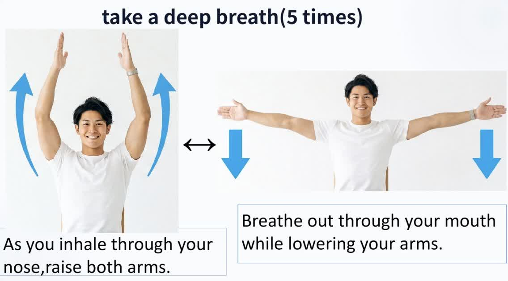

01
一動作だけ、参考画像を用意する
元動画の冒頭「Take a Deep Breath」の写真を切り出しました。上げる・下ろすの2枚は、同じ人物の動作の前後です。
Flowには、この2枚を含む画像を参考素材（Ingredients）として渡しました。「人物は1人」「2つのポーズを連続した動きにする」と明記すると、狙いが伝わりやすくなります。
元動画の冒頭を見る
「吸いながら腕を上げ、吐きながら下ろす」。元動画の一動作を、英語の大きなテロップと声付きで14秒にしました。まずは完成動画で、動きの分かりやすさを確かめられます。
場面ボタンで見たい位置に移動します。再生は動画の再生ボタンから。
元動画の写真を参考画像にして、Flowで10秒の動きと声を生成。そこに準備と余韻を足し、字幕を重ねて14秒のMP4に仕上げました。
動画は制作方法と見え方を確認する試作です。椅子や下半身はAIが補完した部分です。
元動画の冒頭「Take a Deep Breath」の写真を切り出しました。上げる・下ろすの2枚は、同じ人物の動作の前後です。
Flowには、この2枚を含む画像を参考素材（Ingredients）として渡しました。「人物は1人」「2つのポーズを連続した動きにする」と明記すると、狙いが伝わりやすくなります。
元動画の冒頭を見る
Flowで新しいプロジェクトを開き、参考画像を追加します。今回は次の設定で1本だけ生成しました。
2026年10月1日の実行画面で確認した設定です。消費は15クレジット（1,050 → 1,035）。利用できるモデル・機能・消費量は変わるので、生成前に画面の表示を確認してください。Flow公式：モデルと設定
Create a 10-second clear exercise demonstration based on this reference slide. The two photographs show THE SAME instructor in two phases of one movement. Show ONE instructor only, preserving this man's face, white T-shirt, and plain bright background. A locked-off frontal wide shot includes his entire seated body, stable armless chair, feet planted on the floor, and full fingertips even when his arms are overhead. He remains seated upright throughout. Start with both arms relaxed at his sides. From 1 to 4 seconds he slowly raises both arms outward and upward in a broad comfortable arc while inhaling through his nose, reaching a comfortable raised position. From 4 to 8 seconds he slowly lowers both arms in the same outward arc while exhaling through his mouth, returning to his sides. From 8 to 10 seconds he rests calmly. The movement is continuous, symmetrical, gentle and easy for an older viewer to imitate; torso and chair stay still. Hands remain separate with natural anatomy. Replace the static arrows and duplicate photo panels with the actual continuous arm movement. Keep the image uncluttered. English only. A calm clear voice says 'Breathe in. Raise both arms.' during the upward movement, then 'Breathe out. Lower your arms.' during the downward movement. No music, no cuts, no camera movement, no zoom, no text inside the generated footage. We will add large accurate English captions separately.
生成後は、腕の向き・指・椅子・足元・声のタイミングを確認してMP4を保存します。今回、腕を上げると指先が少し画面外に出ました。この点は次の修正候補に残しています。
今回はHTMLで映像を組めるHyperFramesを使用。Flowの10秒を中央に置き、最初の静止画を2秒、最後の静止画を2秒足しました。英語テロップは動画に焼き込み、再生環境によらず表示されます。
声はFlowで同時に生成された英語音声をそのまま使用。音楽は足さず、声の音量を約−16 LUFS、ピーク約−1.4 dBTPに整えています。呼吸のタイミングは、画面下の細いバーでも分かるようにしました。
字幕編集ができる他の動画編集ソフトでも、次の時間割を使って同じ構成を作れます。
今回は1920 × 1080、24 fps、H.264映像＋AAC音声で書き出しました。生成素材は720pなので、1080pへの書き出しで元の細部が増えるわけではありません。
テロップが人物に重ならないか、声が聞き取れるか、吸う・吐くの切替が動きと合うかを確認します。完成MP4と字幕ファイルを、このページから保存できます。
英語字幕ファイル（SRT）を保存テロップは英語を維持し、1画面の指示を短くしました。声は腕を上げ下げする部分だけに入っています。
| 時間 | 画面の英語 | 声・映像 |
|---|---|---|
| 0–2秒 | Sit tall. Feet on the floor. | 最初の静止画。姿勢の準備。 |
| 2–6.5秒 | Breathe in. Raise both arms slowly. | “Breathe in. Raise both arms.” 両腕を上げる。 |
| 6.5–10.3秒 | Breathe out. Lower your arms slowly. | “Breathe out. Lower your arms.” 両腕を下ろす。 |
| 10.3–14秒 | Relax your arms. | 腕を休める。最後に静止画で余韻。 |
一動作・英語テロップ・英語ナレーションまで作れました。今回の課題は、腕を上げた場面の指先が少し切れること。次はカメラをさらに引き、上部に余白を確保する指定で、同じ一動作を作り直すのがよさそうです。
Use a much wider full-body shot with generous empty space above the head. At the highest arm position, every fingertip must remain fully inside the frame, with visible margin above the hands. Do not crop any body part.この一文を加えた再生成は、まだ実行していません。
この試作では、動作の医学的な適切さや個々の利用者への適合は確認していません。現場での動作・可動範囲の確認が残っています。
参考素材は、提供されたYouTube動画の冒頭です。動画タイトルにある専門家承認について、こちらで承認元の確認はしていません。
参考画像を使ったAI生成の試作です。元素材の再利用条件は未確認です。YouTubeへの投稿は行っていません。